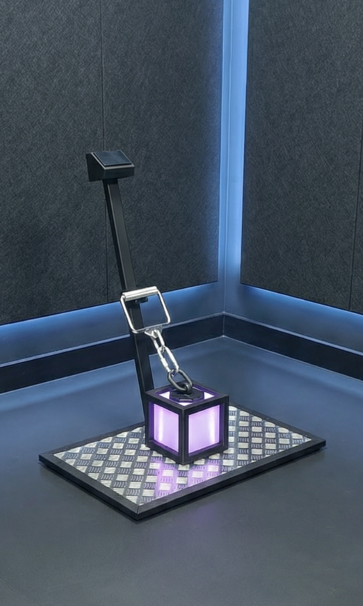

Физическое состояние · без интерпретаций

Фиксирует состояние. Решение за человеком.
Фиксирует состояние. Решение за человеком.

NESCALIBUR — это станция нейромышечного анализа. Она переводит ощущения в данные. Мы исключили субъективность, чтобы вы могли принимать решения, основанные на фактах.
Знание: когда можно идти на рекорд, а когда организм требует восстановления. Снижение риска травм.
Метрика готовности и прогресса подопечного. Основание для коррекции плана тренировок здесь и сейчас.
Снижение оттока клиентов через профилактику выгорания. Технологическое преимущество и забота о долголетии.
 СИЛА · пиковое усилие и импульс
СИЛА · пиковое усилие и импульс
 СКОРОСТЬ · реакция и нарастание усилия
СКОРОСТЬ · реакция и нарастание усилия
 ДЕАКТИВАЦИЯ · скорость расслабления мышц
ДЕАКТИВАЦИЯ · скорость расслабления мышц
Без интерпретаций и обещаний. Только измерение.
Контроль как форма заботы, а не давления.
Физический прибор, а не абстрактное приложение.
NESCALIBUR анализирует ваши время-силовые характеристики. Субъективные ощущения часто обманчивы: вы можете выпить энергетик, но физиологически нервная система не успела восстановиться. Прибор считывает пиковое усилие, градиент мышечной активации и скорость релаксации. Эта информация дает точный ответ: готово ли ваше тело к рекордам сегодня, или программа нуждается в корректировке для предотвращения травм. Это аналитика, которая точнее штанги: мы исключаем читинг, инерцию и погрешности техники, оставляя только чистые данные о вашем прогрессе.
В динамических упражнениях наибольший риск микротравм и разрывов приходится на эксцентрическую фазу (опускание веса) и моменты преодоления инерции. Изометрия исключает эти факторы. Вы работаете с неподвижной рукоятью, генерируя ровно то усилие, на которое способен ваш связочный аппарат в данный момент времени. В системе нет гравитационного давления падающего снаряда. При любом дискомфорте достаточно сбросить напряжение, и нагрузка моментально обнулится. Внимание: тестирование требует предварительной суставной разминки.
Станция откалибрована по стандарту мировой биомеханики — изометрической тяге с уровня середины бедра. Высота в 42 см нивелирует разницу в длине конечностей и гибкости голеностопа, ставя атлетов ростом от 160 до 195 см в позицию максимального механического рычага тазобедренного сустава. Фиксированная позиция — условие, при котором ваши результаты математически валидны для отслеживания долгосрочного прогресса и сравнения с эталонными значениями.
Женская физиология подвержена циклическим гормональным изменениям, которые напрямую влияют на эластичность связок, задержку жидкости и тонус центральной нервной системы. NESCALIBUR позволяет отказаться от культа "цифр на весах" в пользу оценки реальной функциональной готовности. Аппарат рассчитывает показатели относительно вашей массы тела. Вы получаете объективный индикатор: когда организм готов к тяжелой работе на рельеф, а когда связочный аппарат уязвим и требует бережного функционального тренинга или йоги.
Гипертрофия и бодибилдинг: Одно из главныз условие роста мышц — рекрутирование высокопороговых двигательных единиц. Если тест «Деактивация» фиксирует истощение нервной системы, ваш мозг физиологически не сможет задействовать нужные мышечные волокна. Тренировка превратится в "мусорный объем", разрушающий мышцы без стимула к росту. Nescalibur покажет, когда вы готовы к гипертрофии, а когда целесообразнее провести легкую пампинг-сессию.
Пауэрлифтинг и сила: Прогресс в силе часто блокируется не слабостью мышц, а неэффективностью моторной коры. Режим «POWER» строит ваш профиль усилия. Если анализ показывает высокий абсолютный потенциал, но низкую скорость стартовой активации, вам необходимо внедрить динамические циклы с легким весом. Аппарат найдет ваше "слабое звено", которое невозможно определить на глаз.
Единоборства и игровые виды спорта: В динамике побеждает не абсолютная масса, а градиент нарастания силы и способность к мгновенному расслаблению (для хлесткого удара или рывка). Режим «Скорость» оценивает вашу когнитивную реакцию и стартовый баллистический импульс, отсекая случайные предугадывания. Это полезный инструмент для подведения пиковой формы к дате соревнований без риска перетренированности.
Похудение: Длительный дефицит калорий неизбежно угнетает нейромоторный аппарат. Тренировки "на силе воли" при системном утомлении ведут к нарушению биомеханики и травмам. 10-секундный тест покажет уровень стресса организма: это сигнал тренеру снизить интенсивность, выбрав кардио вместо тяжелой базы.